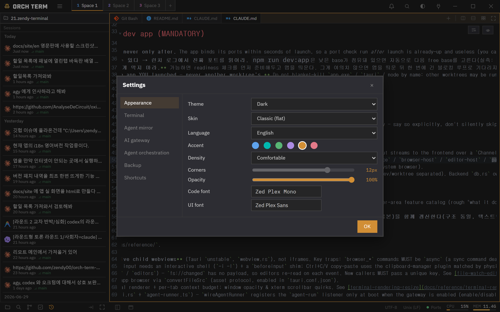
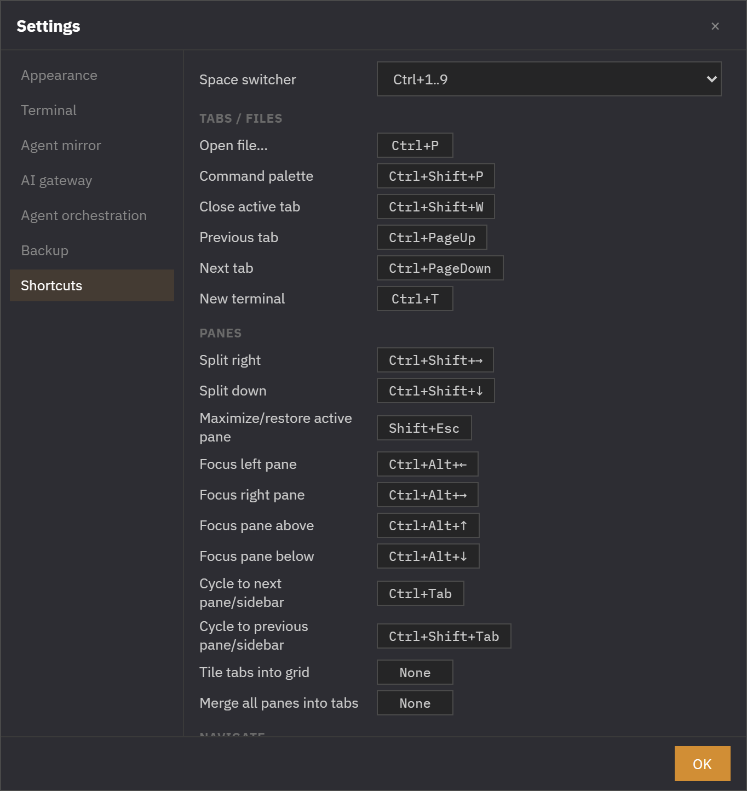
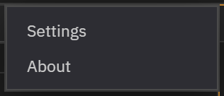
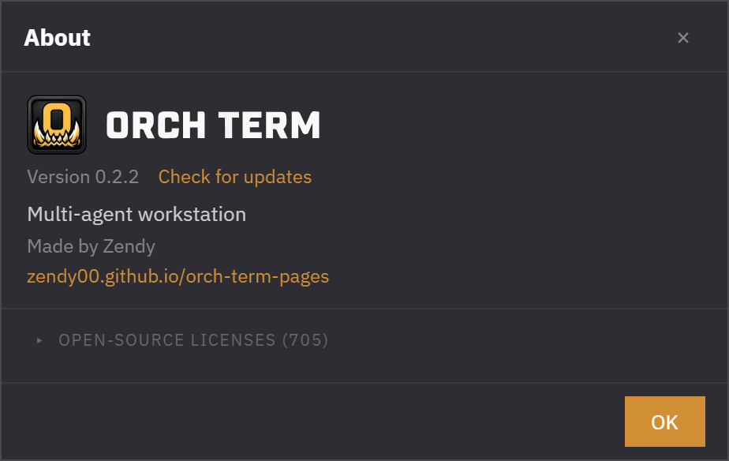

More · System
Appearance · Fonts · Shortcuts
Tune the app's look and feel to your taste. Pick a coding font with a live preview, adjust window opacity, and reassign keyboard shortcuts — all from the hamburger menu → Settings.
Picking a font
In the settings Code font and UI font pickers, choose from bundled fonts together with installed system fonts. Each row is a sample drawn in that font, so you can visually compare Korean glyph widths and how clearly il1Lo0 are distinguished. The code font picker shows monospace only, while the UI font picker shows them all.

App background · panel translucency
The App background · panel translucency group in Settings → Appearance places a background picture inside the app and makes only panel backgrounds translucent, so the picture shows through while text stays sharp. It applies instantly without a restart, and since the app window itself stays opaque it adds almost no GPU load.
- Background image — Choose image… (PNG, JPG or WebP, up to 20 MB), Default (a dark sky with floating rock islands) or No image.
- Panel opacity (0–100%) · Dim background (0–70%).
- Applies to — always used in spatial mode; turn on Also outside spatial mode to use it on the regular split screen too. While you use a see-through window with Window opacity below, it is not applied outside spatial mode.
- These are the same settings as Background in the spatial mode controls, so changing either updates both. In-app browser pages stay opaque.
Window opacity
The Window opacity slider under Settings → Appearance → Window transparency · rendering makes the whole app window translucent so your desktop shows through. Main surfaces like the Explorer, headers, and editor body fade together, while menus, modals, and palettes stay crisp for readability.
The default is 100% (opaque window). A transparent window greatly increases GPU compositing load, so lowering the slider from an opaque window asks for confirmation and the transparent window takes effect only after restarting the app. Raising it back to 100% offers to restart now; after a restart (or from the next launch) the window is opaque again (less GPU).
Terminal renderer
Choose it under Settings → Appearance → Terminal renderer. DOM (default) uses less GPU; WebGL draws heavy output faster and joins box/block characters (─ │ █, agent TUI borders, etc.) seamlessly between rows, but uses more GPU (you'll be asked to confirm). With DOM, thin gaps may appear between box lines depending on display scaling. The change applies to open terminals immediately.
Status bar
The single line at the bottom of the window. On the left are the Explorer toggle and the merge-all-panes-into-tabs button; on the right, information appears in the order below.
| Item | What it shows |
|---|---|
| ① Encoding · line endings | Shown only for editor tabs. Click the encoding to reopen with another encoding or convert and save; click the line ending (LF · CRLF) to change it (Code editor). |
| ② Ports | Opens the list of ports the app has opened. The dot lights up green while the in-app browser mirror is on (Agent mirror). |
| ③ AI usage | The remaining usage limits of Codex, Claude, Antigravity and xAI. Click it for the detail popover (below). |
| ④ CPU · MEM · GPU | Whole-computer CPU, memory and GPU usage (updated every 0.5 seconds). GPU appears only where it can be measured (macOS and Windows). Turn the gauges off under Settings → Status bar. |
AI usage
If you use Codex, Claude, Antigravity or xAI (Grok), the status bar shows how much of each service's usage limit you have used. It reads the sign-in of each CLI you already have installed, so there is nothing to sign in to separately, and services you are not signed in to do not appear (if there are none, the whole area is hidden).
Reading the status bar
Each service shows a monochrome icon + percentage used + a small bar. A service with two limits is split into two lines. Hover over it for a tooltip naming the service and what each line is.
| Service | Top line | Bottom line |
|---|---|---|
| Codex | Weekly limit | — (Codex currently reports only its weekly limit) |
| Claude | 5-hour limit | Weekly limit |
| Antigravity | Gemini models group | Claude and GPT models group (both are weekly limits) |
| xAI (Grok) | Credits used in the current billing period (shared by Grok chat and Build) | — |
- The number is the share used. 59% means you have used 59% of that limit and 41% is left.
- Bar color shows pace, not usage. If you are using a limit faster than its period is passing, it turns yellow → orange → red (thresholds in the detail popover).
- A dimmed icon means an earlier value rather than a fresh one — right after the app restarts, or when the last refresh failed.
- A yellow dot at the icon's top right means the last refresh failed. The reason is shown in the detail popover.
- — means the value is unknown (still loading, connection failed, or the limit has already reset). It never shows a made-up 0%.
Detail popover (click)
Click AI usage to open the detail popover above it. Each limit gets one line showing how much you have used, how much time has passed, and when it resets. Click outside or press Esc to close it.
| Part | Meaning |
|---|---|
| Header | When values were last received (e.g. Updated 1 min ago) and the Refresh now button. |
| Gray text beside a service | A per-service note. Codex: No 5-hour limit info (Codex reports only its weekly limit); Antigravity: the models in each group; xAI: Shared with Grok chat & Build. |
| Limit name | 5-hour · Weekly · Monthly. For Antigravity the group comes first, as in Gemini · Weekly. |
| Bar fill | The share used in the current limit period — the same value as the number on the right. |
| White vertical tick | The time elapsed in the current limit period. Three and a half days into a weekly limit, it sits in the middle of the bar. |
| Percentage | The share used. It takes the bar's color when the pace is fast. |
| Time on the right | When the limit resets: just the time if it is today (13:00), otherwise the weekday and time (Wed 17:00). |
| Bottom line | Legend for the tick and the colors. |
Reading the pace colors — if the fill stays left of the white tick, you are using the limit more slowly than time is passing. The further the fill runs past the tick, the warmer the color.
| Color | Share used − time elapsed | Meaning |
|---|---|---|
| On pace | 0 or less | At this pace the limit will last until it resets. |
| Slightly fast | Up to 10 points | A little fast; usually fine to keep going. |
| Fast | Up to 25 points | At this pace you may run out before it resets. |
| Very fast | More than 25 points | You are likely to hit the limit soon. |
Example: the same 59% is on pace if 80% of the week has passed, and very fast if only 30% has. When the limit's length or reset time is unknown, the bar has no tick and keeps the default color.
In a narrow window
When the window is too narrow for everything to fit, AI usage collapses one step at a time. It expands again when the window gets wider, and clicking it in any form opens the same detail popover.
● AI. In the picture, xAI shows an earlier value (dimmed) and its last refresh failed (yellow dot).- A — default: icon + percentage + bar.
- B — number chips: bars are dropped and only numbers remain. Two limits are split with a slash, as in
18/59, and each number takes its pace color. - C — single indicator: only
● AIremains. The dot takes the pace color of the limit you are using fastest, and a yellow dot is added if any refresh failed.
Turning it on or off — Settings → Status bar
Change it under the hamburger menu → Settings → Status bar. Changes apply immediately; no restart is needed.
| Setting | What it does |
|---|---|
| Show in status bar | Turns AI usage on or off as a whole. On by default. When it is off, nothing is queried and no CLI is run. |
| Per-service checkboxes | Choose which services to show; unchecked services are not queried. Chips: Signed in · No sign-in record · No plan limits (nothing to show, e.g. when you use only an API key) · Not supported on this OS. |
| Refresh every | 1, 2, 5 or 10 minutes (2 minutes by default). Refreshes are skipped while the window is hidden or minimized, and run right away when it comes back if the values are stale. |
| System — CPU · MEM · GPU | Turns the gauges at the far right on or off. |
- How it queries — for Claude and xAI, it uses each CLI's sign-in token to contact only that service's servers. For Codex and Antigravity, it briefly runs the installed CLI (
codex,agy) to read the values. - No tokens are consumed — a usage query is not a conversation, so it does not count against your limits. Sign-in tokens are never stored or sent anywhere else, and Orch term never refreshes them itself.
- macOS Keychain — Claude's sign-in is read with the system
securitytool, so a Keychain approval prompt normally does not appear. - Linux is not supported yet (the chips show Not supported on this OS).
Messages in the detail popover
When a refresh fails, the reason appears in orange under the service name in the detail popover. An earlier value, if any, stays visible (dimmed), and other services are not affected.
| Message | Meaning · what to do |
|---|---|
| Sign-in expired · run Claude Code once to refresh | The CLI's sign-in has expired. Use that CLI once to renew it, and values return on the next refresh. |
| Run Grok to refresh | The xAI sign-in expires after a few hours. Run Grok once to renew it. |
| Rate limited · retrying at 14:32 | The service's server has paused queries for a while. It retries automatically at that time and, if it keeps getting limited, waits longer each time, up to 30 minutes. The refresh button respects this wait too. |
| Connection failed · retrying next refresh | A network error or timeout. It tries again automatically on the next refresh. |
| Access denied · check account permissions | The server refused the usage query for this account. |
| Response format changed · update Orch term | The service changed its response structure. An Orch term update fixes it. |
| codex (or agy) executable not found | There is a sign-in record but the CLI could not be found. Check that the CLI is installed. |
Settings dialog
Open it from the hamburger menu → Settings. Move between the General, Appearance, Terminal, Status bar, Agent mirror, AI gateway, Agent orchestration, Backup, and Shortcuts groups via the left nav, and change values in the right panel.
From the Backup tab you can export settings to a file and import them. Import only applies settings the app recognizes, blocking dangerous values from external files.
Reassign keyboard shortcuts
In the settings Shortcuts section, click a row and press the keys you want to reassign it. It works regardless of keyboard layout, and if it clashes with another command or a fixed shortcut it's shown in red and saving is blocked.

Hamburger menu · About
Click the hamburger at the top left of the titlebar to bring up Settings and About. The button on the right cycles the theme dark → midnight → light.

About shows the brand, version, author, and the list of open-source licenses. Licenses are gathered automatically at build time and are collapsed by default — expand them when you need them.

Keyboard shortcuts
| Key | Action |
|---|---|
| Ctrl+Shift+P | Command palette |
| Ctrl+P | File search palette |
| Esc | Close menu · dropdown |